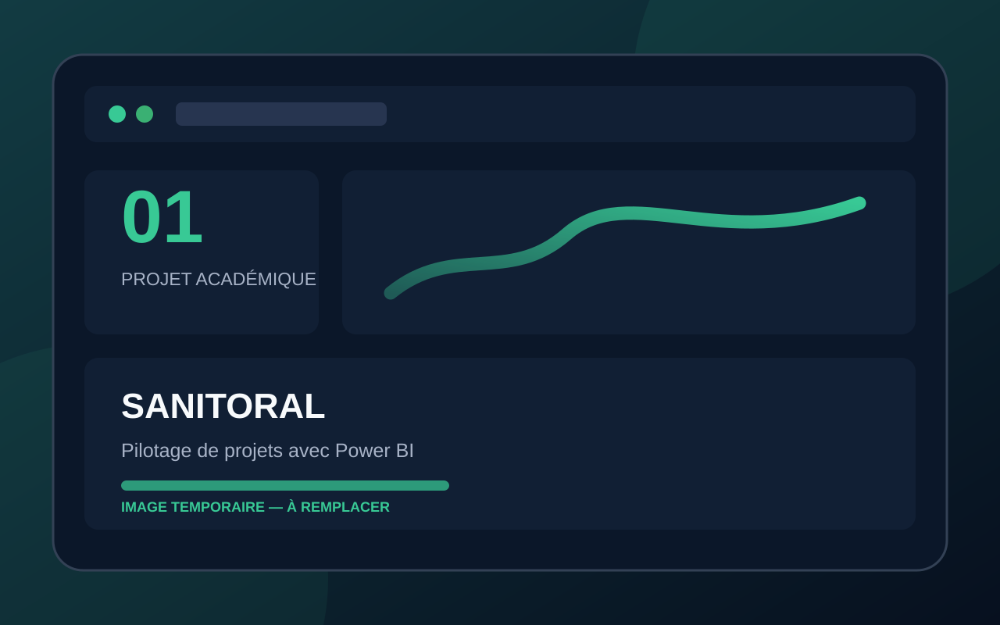
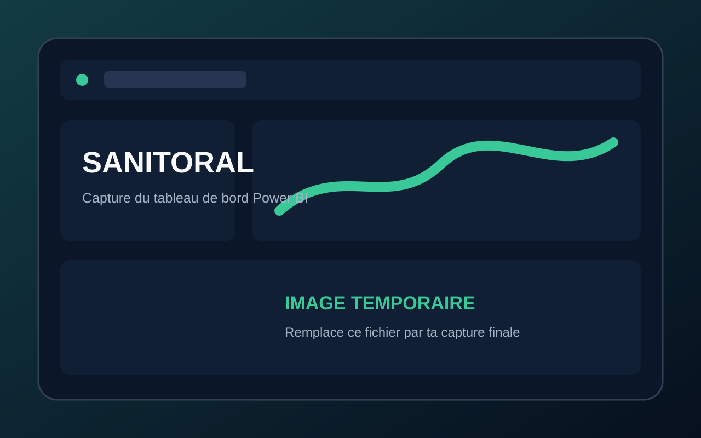
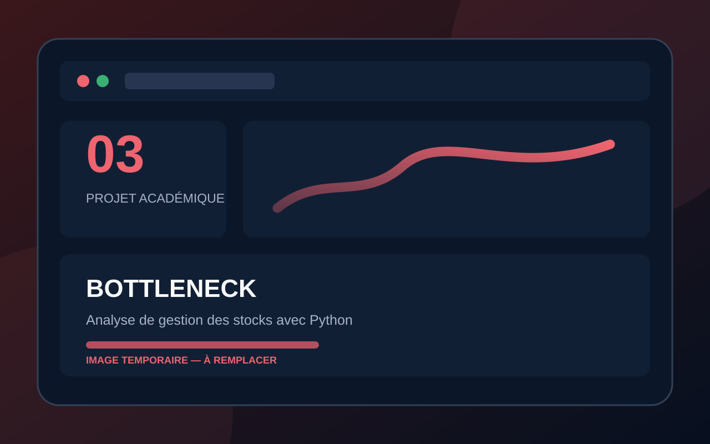
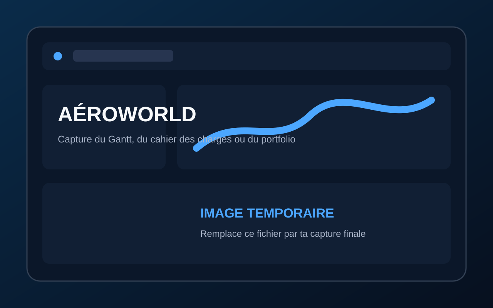
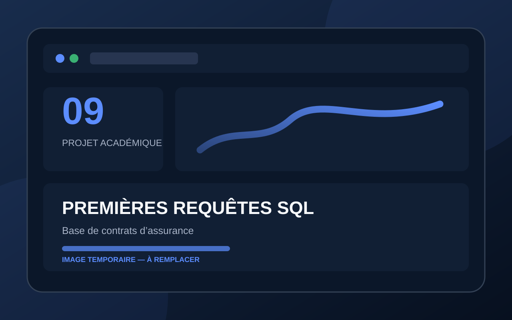

Portfolio académique
Mes projets
Dix études de cas réalisées dans des contextes métier variés : banque, assurance, distribution, immobilier, jeu vidéo, industrie pharmaceutique et gouvernance des données.
Navigation rapide
Explorer les dix projets
Sélectionnez un projet pour accéder directement à sa fiche détaillée.
01
Power BI • Gestion de projet
Sanitoral — Pilotage de projets avec Power BI
Un tableau de bord destiné au PMO pour suivre l’avancement, les retards et la performance des projets.
Voir le projet →
02
Étude de marché • Statistiques
UOI Games — Étude de marché du jeu vidéo AAA
Une étude stratégique destinée à identifier un segment porteur et le concept d’un premier jeu vidéo AAA.
Voir le projet →
03
Python • Qualité des données
Bottleneck — Analyse de gestion des stocks avec Python
Le rapprochement de plusieurs sources et l’analyse des ventes, des prix, des marges et de l’état des stocks.
Voir le projet →
04
Power BI • Data visualisation
Bottleneck — Tableau de bord de gestion des stocks
Une solution de data visualisation user friendly destinée au dirigeant et aux chefs de produits.
Voir le projet →
05
SQL • Expérience client
RetailInsight360 — Analyse des performances commerciales
Une analyse des retours clients et du NPS pour aider BestMarket à améliorer la qualité de son réseau de magasins.
Voir le projet →
06
Machine learning • Python
Projet immobilier — Analyse prédictive des prix avec Python
Une analyse prédictive destinée à valoriser un portefeuille immobilier et à classer automatiquement les opportunités.
Voir le projet →
07
Portfolio • Gestion de projet
Aéroworld — Création d’un portfolio professionnel data
La conception d’un portfolio complet démontrant les compétences techniques, méthodologiques et relationnelles d’un Data Analyst.
Voir le projet →
08
Excel • Data visualisation
Primero Bank — Visualisez des données avec Excel
Une analyse de l’attrition client afin d’identifier les profils susceptibles de quitter la banque.
Voir le projet →
09
SQL • Modélisation relationnelle
Premières requêtes SQL — Base de contrats d’assurance
La conception d’une base de données de contrats d’assurance habitation et la réalisation de douze analyses SQL.
Voir le projet →
10
RGPD • Gouvernance des données
Dev’Immediat — Mission RGPD
Une mission de mise en conformité après une sanction de la CNIL, conciliant anonymisation et continuité de l’analyse commerciale.
Voir le projet →Études de cas
Présentation détaillée

01
Power BI • Gestion de projet
Retour à la liste ↑
Sanitoral — Pilotage de projets avec Power BI
Contexte
Sanitoral est une entreprise internationale spécialisée dans les soins bucco-dentaires. Son service Project Management Office avait besoin d’un reporting lisible et actualisable chaque semaine pour mieux piloter ses projets.
Objectif principal
Créer un tableau de bord permettant de suivre l’avancement des projets, d’identifier rapidement les retards et de contrôler les principaux indicateurs de performance.
Outils utilisés
Compétences démontrées
- Cadrage du besoin et formalisation des user stories
- Nettoyage et transformation automatisés des données
- Modélisation d’un modèle de données
- Conception de visualisations et storytelling
- Documentation d’une procédure de mise à jour
Livrables principaux
Product Strategy Canvas, mock-up, tableau de bord et documentation de mise à jour.

02
Étude de marché • Statistiques
Retour à la liste ↑
UOI Games — Étude de marché du jeu vidéo AAA
Contexte
UOI Games souhaitait explorer une opportunité business pour développer son premier jeu AAA, un investissement long et coûteux nécessitant une compréhension solide du marché et des préférences des joueurs.
Objectif principal
Analyser les tendances du marché, sélectionner un segment de clientèle pertinent et formuler une recommandation de jeu appuyée par des données factuelles.
Outils utilisés
Compétences démontrées
- Analyse SWOT et PESTEL
- Conception et analyse d’un questionnaire
- Tests statistiques, corrélations et segmentation
- Recherche de données externes et veille marché
- Recommandations stratégiques et storytelling
Livrables principaux
Analyses de marché, questionnaire, tests statistiques, recommandations et présentation finale.

03
Python • Qualité des données
Retour à la liste ↑
Bottleneck — Analyse de gestion des stocks avec Python
Contexte
Bottleneck, marchand de vins en ligne, utilisait des exports artisanaux issus de son ERP, de son site web et d’une table de liaison dont les références ne correspondaient pas toujours.
Objectif principal
Fiabiliser les données, rapprocher les différentes sources et produire des analyses utiles au comité de direction sur le chiffre d’affaires, les anomalies et la gestion des stocks.
Outils utilisés
Compétences démontrées
- Nettoyage, contrôle et rapprochement de données
- Jointures entre plusieurs sources
- Détection d’anomalies avec l’IQR ou le Z-score
- Analyse Pareto 20/80 et top références
- Analyse des marges, rotations, stocks et corrélations
Livrables principaux
Notebook d’analyse, synthèse des anomalies et présentation au comité de direction.

04
Power BI • Data visualisation
Retour à la liste ↑
Bottleneck — Tableau de bord de gestion des stocks
Contexte
Après la fiabilisation des données, Bottleneck souhaitait mettre en place une solution durable de mise à disposition des données et un tableau de bord pour piloter son activité.
Objectif principal
Comparer les solutions d’intégration des données, recommander l’architecture la plus adaptée et concevoir un tableau de bord intégrant des recommandations business.
Outils utilisés
Compétences démontrées
- Comparaison de solutions d’accès aux données
- Importation et préparation d’une base SQLite
- Modélisation et création de mesures DAX
- Conception d’un tableau de bord orienté utilisateur
- Formulation de recommandations business
Livrables principaux
Rapport de préconisation, tableau de bord, trois recommandations business et démonstration.

05
SQL • Expérience client
Retour à la liste ↑
RetailInsight360 — Analyse des performances commerciales
Contexte
BestMarket souhaitait exploiter les retours et avis de ses clients. La base initiale devait être complétée avec un référentiel magasins avant de pouvoir répondre aux questions du responsable du service client.
Objectif principal
Formaliser le besoin, enrichir la base de données, contrôler sa qualité et produire des requêtes SQL répondant aux besoins d’analyse du service client.
Outils utilisés
Compétences démontrées
- Reformulation d’une expression de besoin
- Mise à jour d’un schéma et d’un dictionnaire de données
- Création et importation d’une table de référence
- Contrôles de cohérence et de qualité
- Requêtes SQL et présentation à un public non technique
Livrables principaux
Expression du besoin, base enrichie, schéma, dictionnaire, requêtes SQL et présentation.

06
Machine learning • Python
Retour à la liste ↑
Projet immobilier — Analyse prédictive des prix avec Python
Contexte
Les Plus Beaux Logis de Paris souhaitaient mieux anticiper les prix des biens et réduire le temps passé à identifier manuellement la nature des nouvelles opportunités immobilières.
Objectif principal
Analyser l’évolution des prix, construire un modèle de régression fiable, valoriser les actifs et utiliser le clustering pour classer automatiquement les biens.
Outils utilisés
Compétences démontrées
- Exploration et visualisation de données
- Sélection de variables explicatives
- Régression et évaluation de l’erreur de prédiction
- Clustering et classification automatique
- Interprétation des limites et recommandations business
Livrables principaux
Notebook de modélisation, valorisation du portefeuille, clustering et présentation client.

07
Portfolio • Gestion de projet
Retour à la liste ↑
Aéroworld — Création d’un portfolio professionnel data
Contexte
Aéroworld souhaitait présélectionner ses candidats à partir de leur portfolio. Le projet consistait à organiser et produire un support professionnel répondant à un cahier des charges exigeant.
Objectif principal
Piloter la création d’un portfolio démontrant le profil, les projets, les compétences, les soft skills et la capacité à conduire un projet data de bout en bout.
Outils utilisés
Compétences démontrées
- Analyse des besoins métier
- Rédaction d’un cahier des charges fonctionnel
- Planification et gestion de projet
- Conception de mock-ups et tableaux de bord
- Documentation, formation et communication
Livrables principaux
Carte mentale, analyse du besoin, cahier des charges, Gantt, mock-ups, tableaux de bord, vidéo, documentation et portfolio.

08
Excel • Data visualisation
Retour à la liste ↑
Primero Bank — Visualisez des données avec Excel
Contexte
Primero Bank faisait face à de nombreux départs de clients. La direction commerciale devait comprendre les facteurs associés à ces départs avant de définir un plan d’action.
Objectif principal
Comparer les clients partis et les clients actifs, identifier les profils à risque et communiquer les conclusions au moyen de visualisations accessibles.
Outils utilisés
Compétences démontrées
- Analyse exploratoire et segmentation client
- Fonctions statistiques et agrégations Excel
- Création de tableaux croisés dynamiques
- Choix de graphiques adaptés
- Accessibilité, vulgarisation et présentation
Livrables principaux
Rapport d’analyse PDF et présentation de 15 diapositives maximum avec au moins cinq visualisations accessibles.

09
SQL • Modélisation relationnelle
Retour à la liste ↑
Premières requêtes SQL — Base de contrats d’assurance
Contexte
Une entreprise d’assurance souhaitait mieux comprendre le marché de l’habitation à partir de données de contrats clients et d’un référentiel géographique des régions françaises.
Objectif principal
Explorer les données, concevoir un modèle relationnel normalisé, créer et charger la base puis répondre aux questions métier avec des requêtes SQL.
Outils utilisés
Compétences démontrées
- Création d’un dictionnaire de données
- Modélisation d’un schéma relationnel normalisé
- Création et chargement d’une base de données
- Contrôle des volumes et de l’intégrité
- Rédaction, documentation et présentation de requêtes SQL
Livrables principaux
Dictionnaire, schéma relationnel, script SQL, base chargée, document des douze requêtes et présentation.

10
RGPD • Gouvernance des données
Retour à la liste ↑
Dev’Immediat — Mission RGPD
Contexte
À la suite d’une plainte client, Dev’Immediat avait subi une limitation temporaire des traitements. L’entreprise devait appliquer rapidement les règles du RGPD dans ses processus CRM.
Objectif principal
Émettre des recommandations de conformité, anonymiser totalement une extraction du CRM et empêcher l’accès aux données tarifaires détaillées.
Outils utilisés
Compétences démontrées
- Compréhension et application des principes du RGPD
- Sélection et minimisation des données
- Anonymisation et suppression d’informations sensibles
- Préparation et contrôle qualité avec Power Query
- Documentation d’un processus de conformité
Livrables principaux
Cinq recommandations RGPD, extraction CSV anonymisée et rapport d’anonymisation de dix pages maximum.